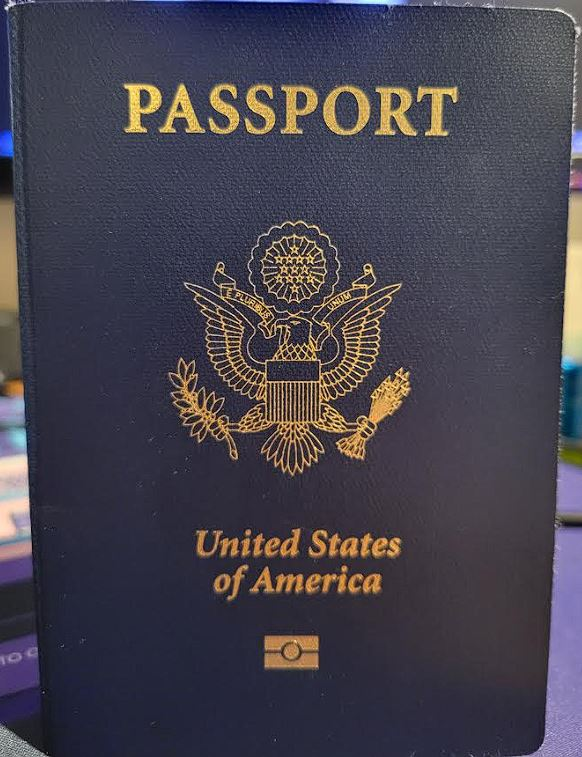
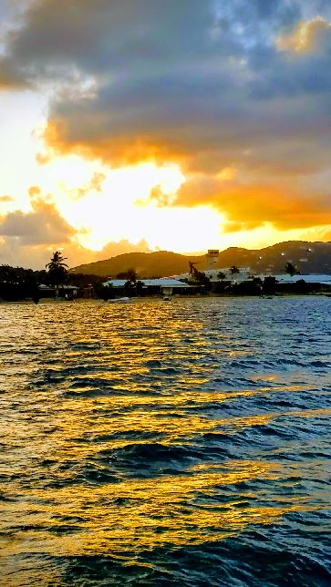

home
Welcome to my hobby website. A hobby of mine is traveling. There's nothing better than relaxing by a beach or eating great food in another country.
about me
I wasn't always interested in traveling. The first time I traveled outside of the United States was in late 2018. I had the opportunity to visit and sail around the British Virgin islands. I had an amazing time and wanted more. That conflicted with the career I had at the time, which was as an automotive technician. Traving is expensive and time consuming. Being a technician is a very demanding job that can pay well, but at the cost of your free time. I was working 60 hours a week and getting a couple weeks off for vacation isn't always easy to do and I usually had to fight for it. So, I made the decision to go back to school so I could get into a career that pays better with less hours and more time to travel.
travel
Reasons to travel:
- Good Food
- Beautiful Beaches and Cities
- Relaxing
- New experiences
- Really good food!
Reasons to not travel
- The pups cannot come with:
british virgin islands islands
I spend 10 days sailing around the BVI. We would sail during the day and anchor in the bay of an island at night. While ancored we took the dinghy to shore to have dinner and go to the bar. The traditional carribean food there was amazing. I learned to sail and the weather was perfect. I'll be back their this summer.